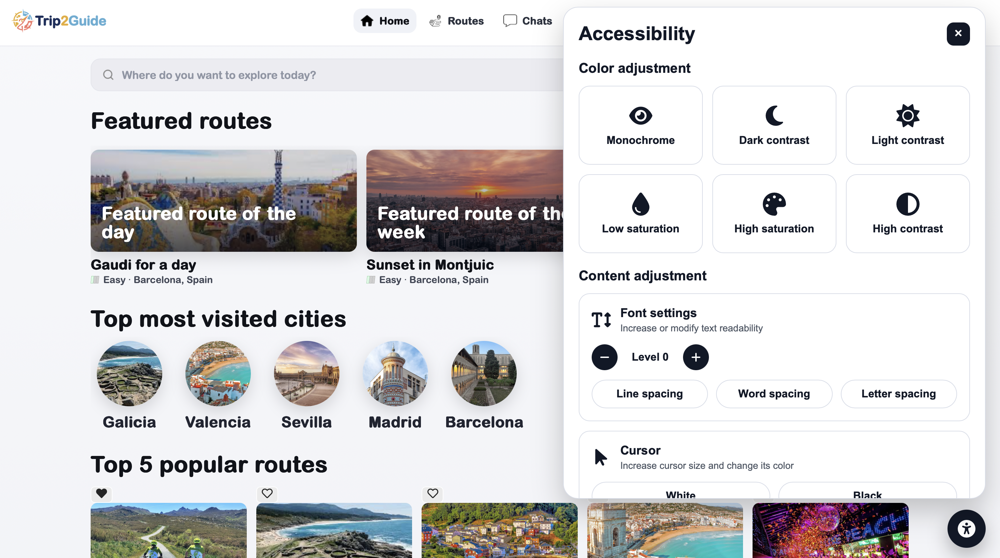
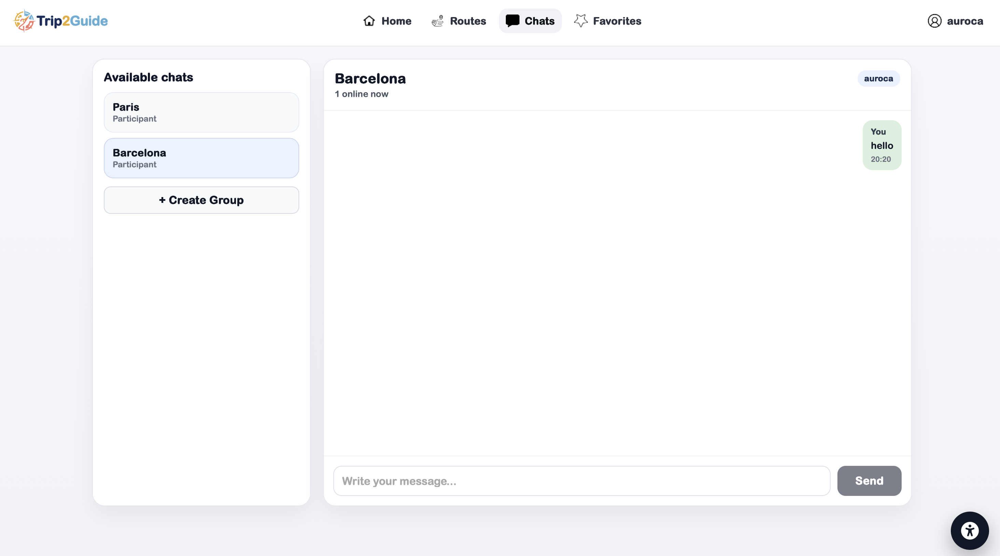
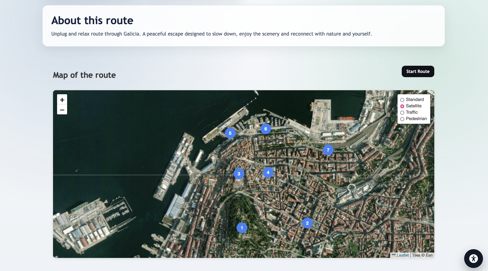
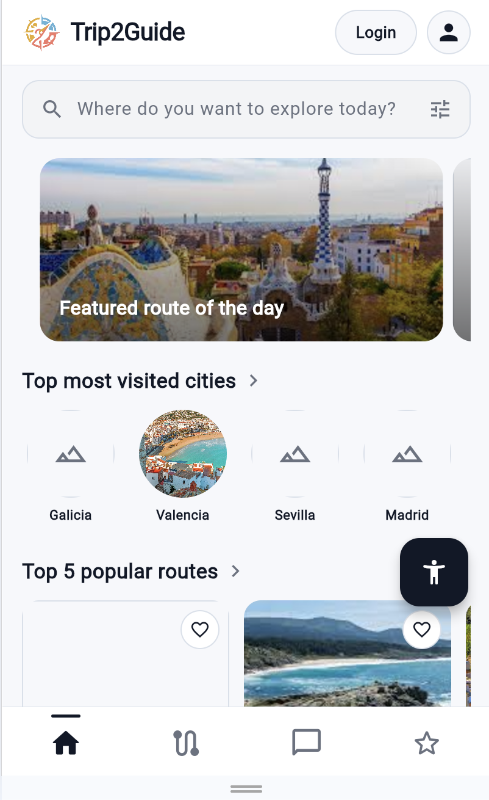
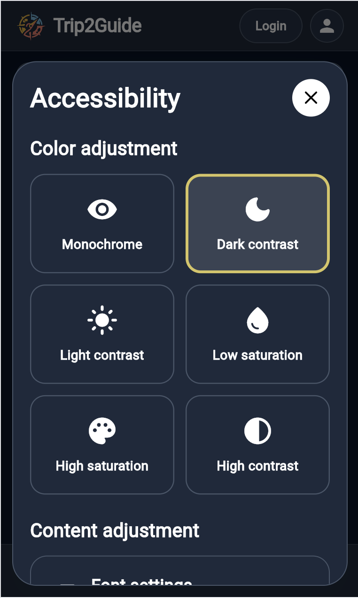
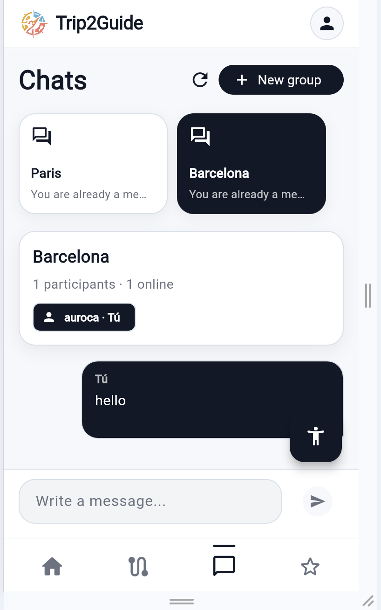

Sprint 3: Desplegament a Docker, App mòbil i millores generals
Període del Sprint: Fins a l'12 de maig de 2026.
En aquest Sprint 3 hem consolidat diferents parts clau del projecte. Hem avançat en el
desplegament amb Docker, hem desenvolupat una primera versió funcional de l'App mòbil,
hem incorporat noves funcionalitats a la WebApp i hem continuat millorant el
Backend. A més, hem començat a aplicar criteris
d'accessibilitat per fer l'aplicació més clara, usable i inclusiva.
Desplegament a Docker
Durant aquest sprint hem treballat en el desplegament del projecte mitjançant Docker, amb l'objectiu
de facilitar l'execució dels diferents serveis de l'aplicació en un entorn més controlat i reproduïble. Aquesta
millora ens permet preparar millor el projecte per a entorns de desenvolupament, proves i futurs desplegaments.
Primera versió funcional de l'App mòbil
També hem aconseguit una primera versió funcional de l'App mòbil. Aquesta versió inicial permet a
l'usuari fer login i registrar-se, accedir a la pantalla d'inici, consultar les rutes disponibles,
marcar rutes com a favorites i utilitzar un xat dins de l'aplicació. A més, hem incorporat criteris
d'accessibilitat per millorar l'experiència d'ús i facilitar la navegació dins de l'app. Aquesta primera
versió estableix la base sobre la qual continuarem afegint noves pantalles, interaccions i connexions amb el Backend.
Millores i noves funcionalitats a la WebApp
Pel que fa a la WebApp, hem continuat evolucionant la primera versió presentada al sprint anterior.
En aquest sprint hem incorporat noves funcionalitats i millores visuals per fer que l'experiència
d'usuari sigui més completa, coherent i propera al producte final.
Hem afegit la possibilitat de marcar rutes com a favorites, de manera que l'usuari pugui guardar i accedir fàcilment a les rutes que més li interessen. També hem incorporat un sistema de xat entre usuaris, on un usuari pot crear un grup i altres usuaris poden unir-s'hi si el grup és públic. En el cas dels xats privats, els usuaris només poden accedir-hi si disposen de la contrasenya corresponent.
Una altra millora important ha estat la integració d'un mapa dins de les rutes. Aquest mapa permet visualitzar el recorregut complet de la ruta i identificar els punts importants que en formen part, facilitant així la comprensió del trajecte abans i durant l'experiència.
Finalment, hem afegit un botó d'accessibilitat per adaptar millor la WebApp a diferents necessitats d'ús i millorar la navegació dins de la plataforma.
Accessibilitat
En aquest sprint també hem incorporat un botó d'accessibilitat per millorar l'experiència
d'ús de la WebApp i adaptar-la a diferents necessitats dels usuaris. Aquest menú permet
modificar aspectes visuals i de lectura de la interfície, facilitant una navegació més
còmoda, clara i inclusiva.
Entre les opcions disponibles, l'usuari pot ajustar els colors de la pàgina amb modes com monocrom, contrast fosc, contrast clar, baixa saturació, alta saturació i alt contrast. També pot modificar la llegibilitat del contingut mitjançant opcions de configuració de la font, com l'espaiat entre línies, paraules i lletres.
A més, el menú inclou opcions relacionades amb el cursor, permetent augmentar-ne la visibilitat i canviar-ne el color. També s'ha afegit una opció de focus visible per facilitar la navegació amb teclat i un botó per restablir la configuració d'accessibilitat quan l'usuari ho necessiti.






Metodologia i organització del Sprint
Hem continuat treballant seguint una metodologia àgil, mantenint el seguiment de tasques, la distribució del treball
i l'evolució progressiva del projecte. En aquest sprint hem combinat tasques de desplegament, desenvolupament
funcional, millora tècnica i revisió d'usabilitat, mantenint el treball separat per àrees com Backend, Backoffice,
WebApp, App mòbil, DevOps i accessibilitat.